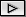
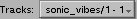
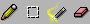
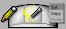
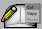
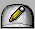
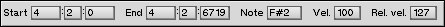
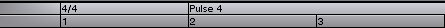

Track windows are used to edit all the event data in a single track. This window contains the following controls:
| 4.1. The Transport Controls |
| Play Song. Play all tracks in the song, starting from the left edge of the window and stopping automatically at the right edge. | |
|  | Play Track. Play this track, starting from the left edge of the window and stopping automatically at the right edge. |
| Stop. Stop playback. This will also (in most cases) stop any stuck notes that are playing. | |
| Loop Mode. Toggle loop mode on or off. See section 4.1.1. Looping, below. |
4.1.1. Looping
When the loop button is activated, start and end loop markers appear in the top line of the measure control. Loop mode is intended to be transitory: You turn loop mode on when you want to compose a passage by continually layering it, then you turn loop mode off again.
The loop is set to automatically begin at the first completely visible measure, and end at the last completely visible measure. You can drag the markers to select a new loop range, but if you turn off loop mode, enable it again, and one or both of the markers are beyond the bounds of the view, then the markers will again be placed to align with the first and last completely visible measures.
4.1.2. Keyboard Control
The transport controls can also be activated from the keyboard.
| 4.2. The Grid and Velocity Controls |
The grid control determines both the duration of new notes and the quantize value used when moving existing events. The views in the track window will display a light vertical line to indicate the current grid.
The velocity control sets the velocity used for any newly created notes.
| 4.3. The Active Tracks |  |
The active tracks button is also used to set ordered tracks. In addition to the primary track, a track window can have any number of ordered tracks, which are selected in the submenu of each track in the active tracks menu. The event inspector works only on the primary track, but other than that, the difference between the primary track and the ordered track depends on the tool.
Ordered tracks work in conjunction with tools. Basic tools will operate on ordered tracks just like they operate on the primary track. For example, if you select an area with the Select tool, all primary and ordered events become selected. If you create an event with the Pencil tool, events are created in both the primary and ordered tracks. Using ordered tracks, you can drag events from multiple tracks together in a single track window.
More advanced tools make specific use of the ordered tracks. For example, a keyboard splitter tool might take all events below the split point and send them to the second of any ordered tracks (the second ordered track will have a '2' next to its name in the active tracks menu). The complexity is limited only by the tool design, so read the documentation for any tools you don't understand. Also, each tool has a tool tip that appears after hovering over the tool in the tool bar -- if the tool makes use of ordered tracks, the tool tip will give you a hint as to how best to use the tool, by supplying the number of ordered tracks the tool expects.
| 4.4. The Tools |  |
| 4.4.1. The Active Tools |  |  |  |
| 4.4.2. The Tool Bars |
As the mouse moves over tools in a tool bar, the appropriate tool highlights, and a property button appears in the upper left corner. If you click on the tool anywhere besides the menu button, the tool becomes active for the button you clicked. Clicking the menu button allows you to perform these operations:
You can add tools to a tool bar by opening the Manage Tools window and dragging the desired tool onto its desired place in the tool bar. If the tool is dragged on top of an existing tool, it will replace that tool. If it is dragged to the left or right edge of a tool, it will insert appropriately.
| 4.4.3. The PopUp Menu |
| 4.4.4. Keyboard Control |
| First Tool Slot<./th> | Second Tool Slot |
|---|---|
| F1 = Pencil | SHIFT F1 = Pencil |
| F2 = Select | SHIFT F2 = Select |
| F3 = Wand | SHIFT F3 = Wand |
| F4 = Eraser | SHIFT F4 = Eraser |
| 4.5. The Event Inspector |  |
| 4.6. The Measure Control |  |
By itself, this motion will do nothing. It will only be used in two situations: When you are using a tool that makes use of the current track's motions, or when the track has a filter in the output pipeline that makes use of the track's motions. The first case is an example of destructive processing, and gives little advantages over what the tools are already capable of. The second case is nondestructive, and is far more interesting.
In the second case, your track data is dynamically processed based on the track's motions whenever you play your song. This allows you to easily try different dynamics wherever you like. For example, if you have a four measure string piece that seems a little static, try putting a crescendo into just that section -- and since the crescendo is happening nondestructively, literally one mouse click can change it into a decrescendo, or whatever dynamics you have motions for.
Motions are covered in detail in chapter 11, so the possibilities might not yet be obvious. As you'll see, there is nothing that requires a motion be tied to volume. It can affect pitch, control changes, aftertouch, or do any kind of processing you have a filter for. Sequitur includes several filters for manipulating motions, including Vaccine.V, Vaccine.P and Motion Control.
4.6.1. Track Motion Tutorial
This example demonstrates track motions, as described in section 4.6.
You can easily experiment with different motions. Right click on the 'Pulse 4' label in the measure control, move to the Motions submenu, and select a different motion. Now play the track again -- the notes will have a different accent, depending on the motion you chose. Use the Manage Motions window to browse all the available motions.
| 4.7. The Primary and Strip Views |
| 4.7.1. The Primary View |
| 4.7.2. The Strip Views |
The upper-left corner of each strip view displays a property button. Pressing this button allows you to manage your strip views by duplicating the current strip, changing it to another type of strip view, or removing it altogether. Below the strip views is a final property button not associated with any strip. This button allows you to add new strips to the end of the list.
Certain views might add new choices to their property menu. For example, control change views add a menu item labeled Control Change, which allows you to change the view to display and edit any of the 128 available control numbers (although this menu item will be unavailable if the current track has no output filter selected).
| 4.7.3. Keyboard Control |
Holding down OPTION (varies with your keyboard, but generally the Windows key on Windows keyboards) while pressing the arrow keys operates exactly like the wand tool. For example, OPTION-ARROW UP will increase the velocity of note events, OPTION-ARROW LEFT will decrease their duration, etc. Using OPTION-ARROW UP and OPTION-ARROW DOWN on program change events is an easy way step through programs without the fatigue of holding down the mouse. Holding down the arrow keys slowly increases the rate of change.
The DEL key can be used to delete all the selected events.
Preliminary note: Using arrow keys without CTRL or other modifiers is reserved for changing the current note selection. Currently, the right arrow key can be used to change the selected event, although this functionality is not complete. For example, in its current state, the arrow key will not jump across phrase boundaries.
| 4.8. Menu Bar |